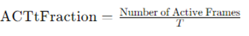
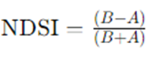

Acoustic-Based Biodiversity Indices
Soundscape Metrics
Soundscape measurements refer to the quantitative analysis of the sounds present in a particular environment, capturing not only individual sounds but also their patterns, frequencies, and intensities over time. These measurements are important in relation to biodiversity indices for several reasons:
Indicator of Biodiversity: The diversity and composition of species within an ecosystem can be inferred from the soundscape. Different species produce distinct sounds, and the presence or absence of certain sounds can indicate the presence or absence of particular species. For example, the diversity of bird calls in a forest can be used as an indicator of avian biodiversity.
Non-invasive Monitoring: Soundscape measurements offer a non-invasive way to monitor biodiversity. Unlike traditional methods such as trapping or visual surveys, which can be disruptive and time-consuming, recording and analyzing soundscape data can be done remotely and continuously, providing valuable insights into biodiversity without disturbing the ecosystem.
Temporal and Spatial Dynamics: Soundscape measurements capture the temporal and spatial dynamics of biodiversity. By analyzing changes in sound patterns and intensity over time and across different locations within an ecosystem, researchers can identify patterns of species activity, migration, and distribution, providing a more comprehensive understanding of biodiversity dynamics.
Early Warning System: Changes in the soundscape can serve as an early warning system for ecosystem health. Alterations in sound patterns, such as the decline or disappearance of certain species’ vocalizations, can indicate disturbances or threats to biodiversity, such as habitat loss, pollution, or invasive species encroachment, allowing for timely intervention and conservation efforts.
Integration with Biodiversity Indices: Soundscape measurements can be integrated with traditional biodiversity indices to enhance their accuracy and comprehensiveness. By combining acoustic data with other ecological data, such as species abundance and habitat characteristics, researchers can develop more robust biodiversity assessments that capture the full spectrum of biodiversity within an ecosystem.

Acoustic-based Biodiversity Indices
For this exploratory study we use the package scikit-maad, a tool commonly used in the terrestrial community. Scikit-maad, short for “Machine learning for Acoustic Activity Detection,” is a Python package designed for the analysis of acoustic data, particularly for bioacoustic applications. It provides a comprehensive set of tools and functions for processing, extracting features from, and analyzing soundscape recordings. Scikit-maad is primarily focused on facilitating the use of machine learning techniques for tasks such as acoustic event detection, species classification, and biodiversity monitoring.
The developers of scikit-maad are a team of researchers and developers passionate about bioacoustics and computational ecology. They have expertise in signal processing, machine learning, and ecology, and their aim is to provide accessible and powerful tools for analyzing acoustic data and advancing research in the field of bioacoustics. The development of scikit-maad is supported by contributions from the open-source community and collaborations with researchers and practitioners in various domains related to acoustic ecology and biodiversity monitoring.
In scikit-maad, the acoustic-based indices can be categorized into several main categories based on the aspects of the acoustic signal they capture:
Temporal Indices: These indices focus on the temporal characteristics of the acoustic signal, such as event duration, inter-event intervals, and event rate.
Spectral Indices: These indices analyze the frequency content of the acoustic signal, including measures such as spectral flux, spectral centroid, and mel-frequency cepstral coefficients (MFCC).
Spectro-Temporal Indices: These indices combine both temporal and spectral features, capturing information about the dynamics and variability of the acoustic signal over time and across different frequency bands.
Alpha Acoustic Indices: These indices are derived from ecological concepts and are specifically designed to quantify aspects of biodiversity or acoustic activity within a given environment. Examples include the Acoustic Diversity Index (ADI), Acoustic Complexity Index (ACI), and Acoustic Richness Index (ARI).
Index Definitions
Below is a summary of the available spectro-temporal features, alpha acoustic indices, temporal features, and spectral features in scikit-maad:
ACI (Acoustic Complexity Index)
Description: Quantifies the complexity of sound by evaluating the variation in amplitude among frequency bands.
Formula:
ADI (Acoustic Diversity Index)
Description: Measures the variety of sound frequencies present, indicative of biodiversity.
Formula: frequency bin.
AEI (Acoustic Evenness Index)
Description: Evaluates the evenness of the distribution of sound energy across frequencies.
Formula: Similar to ecological evenness indices, calculated as AEI=
ACTspCount (Active Space Count)
Description: Count of spatial areas showing significant sound activity.
Formula: Counting areas where sound exceeds a certain spatial or acoustic threshold.
ACTspFract (Active Space Fraction)
Description: Fraction of the spatial domain showing active sound production.
Formula:
ACTspMean (Active Space Mean)
Description: Average level of sound activity across spatial areas.
Formula:
ACTtCount (Active Time Count)
Description: Number of times the sound level exceeds the predefined threshold.
Formula: Counting the number of active frames.
ACTtFraction (Active Time Fraction)
Description: Proportion of the recording duration where the sound level exceeds a predefined threshold.
Formula: 
ACTtMean (Active Time Mean)
Description: Average sound level during active times.
Formula:
AGI (Acoustic Gap Index)
Description: Index measuring the gaps or silent intervals within the acoustic signal, indicative of disturbance.
Formula:
AnthroEnergy (Anthropogenic Energy)
Description: Measure of energy associated with human-made sounds.
Formula: Sum of energy in designated anthropogenic frequency bands.
BGNf (Background Noise Level Frequency)
Description: Background noise level in the frequency domain.
Formula: Typically estimated during periods of minimal activity; specifics can vary.
BGNt (Background Noise Level Time)
Description: Level of background noise in the time domain.
Formula: Typically estimated during periods of minimal activity; specifics can vary.
BI (Biotic Index)
Description: Index evaluating the presence of biological sounds.
Formula: Calculated as a function of specific frequency and time thresholds indicative of biological activity.
BioEnergy (Biophonic Energy)
Description: Measure of energy associated with natural sounds.
Formula: Sum of energy in designated biophonic frequency bands.
EAS (Energy Acoustic Spectrum)
Description: Total acoustic energy measured across the spectrum.
Formula:
ECU (Evenness of the Channel Utilization)
Description: Evenness with which different frequency channels are utilized.
Formula:
ECV (Energy Coefficient of Variation)
Description: Coefficient of variation of the energy across different frequency bands.
Formula:
ENRf (Energy Ratio Frequency)
Description: Ratio of energy within certain frequency bands compared to the total energy.
Formula:
EPS (Energy Peak Spectrum)
Description: Measure of the peak energy in the spectrum.
Formula:
EPS_KURT (Energy Peak Spectrum Kurtosis)
Description: Kurtosis of the energy peak spectrum, indicating the shape of the peak distribution.
Formula: Calculation of kurtosis applied to the distribution of peak energies.
EPS_SKEW (Energy Peak Spectrum Skewness)
Description: Skewness of the energy peak spectrum, indicating the asymmetry of the peak distribution.
Formula: Calculation of skewness applied to the distribution of peak energies.
EVNspCount (Event Space Count)
Description: Count of sound events in spatial areas.
Formula: Counting distinct sound events in spatial regions.
EVNspFract (Event Space Fraction)
Description: Fraction of the spatial domain where sound events occur.
Formula:
EVNspMean (Event Space Mean)
Description: Average level of sound events across spatial areas.
Formula:
EVNtCount (Event Time Count)
Description: Number of distinct sound events detected.
Formula: Counting distinct events based on a defined threshold.
EVNtFraction (Event Time Fraction)
Description: Fraction of time that ‘events’ (heightened sound activity) occur.
Formula:
EVNtMean (Event Time Mean)
Description: Average sound level during event times.
Formula:
Hf (High Frequency Coverage)
Description: Extent to which high frequencies are present in the soundscape.
Formula:
HFC (High Frequency Coverage)
Description: Reiterates the presence and extent of high frequencies in the soundscape.
Formula:
H_GiniSimpson (Gini-Simpson Entropy)
Description: Entropy based on the Gini-Simpson index, reflecting diversity and probability.
Formula:
H_Havrda (Havrda Entropy)
Description: Entropy measure based on Havrda-Charvat entropy, reflecting diversity.
Formula:
H_pairedShannon (Paired Shannon Entropy)
Description: Shannon entropy calculated from paired data sets for comparing diversity.
Formula:
H_Renyi (Renyi Entropy)
Description: Generalized entropy measure capturing diversity and richness of the soundscape.
Formula:
H_gamma (Gamma Entropy)
Description: Entropy measure based on the gamma distribution, used for sound diversity.
Formula: Specific calculation details can vary, often involving the use of the gamma function in entropy calculations.
KURTf (Kurtosis Frequency)
Description: ‘Tailedness’ of the frequency distribution, indicating infrequent extreme frequency deviations.
Formula:
KURTt (Kurtosis Time)
Description: ‘Tailedness’ of the amplitude distribution in the time domain, indicating infrequent extreme deviations.
Formula:

LFC (Low Frequency Coverage)
Description: Extent to which low frequencies are present in the soundscape.
Formula:
LEQf (Long-term Equivalent Level Frequency)
Description: Equivalent constant sound level in the frequency domain that conveys the same sound energy.
Formula:
LEQt (Long-term Equivalent Level Time)
Description: Constant sound level that delivers the same sound energy as the varying sound level over a specified period.
Formula:
MFC (Mid Frequency Coverage)
Description: Extent to which mid-range frequencies are present in the soundscape.
Formula:
MEANf (Mean Frequency)
Description: Average frequency of sounds, weighted by their amplitude.
Formula:
MEANt (Mean Time)
Description: The average amplitude of the audio signal over time, reflecting the overall loudness.
Formula:
NBPEAKS (Number of Peaks)
Description: Total number of prominent peaks in the frequency spectrum.
Formula: Count of frequency peaks exceeding a certain amplitude threshold.
NDSI (Normalized Difference Soundscape Index)
Description: Index of the balance between biological sounds and anthropogenic noise.
Formula: 
RAOQ (Rao’s Quadratic Entropy)
Description: Entropy measure that considers both abundance and dissimilarity among categories.
Formula:
rBA (Relative Biophony-Anthrophony)
Description: Relative levels of biophony (natural sounds) and anthrophony (human-made sounds).
Formula: Similar to NDSI, calculated for different contexts or specific frequency bands.
ROIcover (Region of Interest Coverage)
Description: Extent to which regions of interest cover the acoustic space.
Formula:
ROItotal (Region of Interest Total)
Description: Total measure or count of regions of interest identified within the soundscape.
Formula: Counting the total number of identified acoustic regions of interest.
ROU (Roughness)
Description: Measure of the texture or roughness of the sound profile.
Formula: Typically involves calculating modulation of sound amplitude or frequency over time.
SKEWf (Skewness Frequency)
Description: Asymmetry of the frequency distribution of the sound.
Formula:
SKEWt (Skewness Time)
Description: Asymmetry of the amplitude distribution of the audio signal in the time domain.
Formula:
SNRf (Signal-to-Noise Ratio Frequency)
Description: Ratio of signal level to noise level in the frequency domain.
Formula:
SNRt (Signal-to-Noise Ratio Time)
Description: Ratio of the audio signal level to the level of background noise.
Formula:
TFSD (Temporal Frequency Spectral Diversity)
Description: Diversity of frequencies over time, reflecting temporal variation.
Formula: Often calculated using indices similar to biodiversity indices but applied to the temporal frequency spectrum.
VARf (Variance Frequency)
Description: Variance in the frequency of sounds, indicating dispersion around the mean frequency.
Formula:
VARt (Variance Time)
Description: Variance of the time-domain audio signal amplitude, indicating amplitude fluctuations over time.
Formula:
ZCR (Zero Crossing Rate)
Description: Measures the rate at which the signal changes from positive to negative or back, indicating the frequency content of the sound.
Formula:
Frequency Bands, Thresholds & Masks
Indices Measuring Biophony vs. Anthrophony
NDSI (Normalized Difference Soundscape Index)
Description: Quantifies the balance between biophonic and anthrophonic sound sources within a soundscape. It is often used as a metric for assessing environmental health and biodiversity.
Formula:
B: Biophony energy within defined frequency bands.
A: Anthrophony energy within defined frequency bands.
Frequency Limits:
Biophony: Typically low to mid frequencies (e.g., 0-1000 Hz).
Anthrophony: Typically higher frequencies (e.g., 1000-4000 Hz).
BioEnergy (Biophonic Energy)
Description: Measures the total acoustic energy attributed to natural sound sources within the defined biophonic frequency range.
Calculation: Sum of the acoustic energy in the biophonic frequency bands.
Frequency Limits:
- Biophony: Typically low frequencies (e.g., 0-1000 Hz).
AnthroEnergy (Anthropogenic Energy)
Description: Measures the total acoustic energy attributed to human-made sound sources within the defined anthrophonic frequency range.
Calculation: Sum of the acoustic energy in the anthrophonic frequency bands.
Frequency Limits:
- Anthrophony: Typically higher frequencies (e.g., 1000-4000 Hz).
rBA (Relative Biophony-Anthrophony)
Description: Compares the relative levels of biophonic and anthrophonic energy within the soundscape.
Calculation: A ratio or comparison metric between the biophonic and anthrophonic energies.
Frequency Limits:
Biophony: Typically low frequencies (e.g., 0-1000 Hz).
Anthrophony: Typically higher frequencies (e.g., 1000-4000 Hz).
In addition to the indices that explicitly measure biophony and anthrophony (like NDSI, BioEnergy, AnthroEnergy, and rBA), there are other indices in the scikit-maad library that utilize these frequency limits (flim_low and flim_mid) for their calculations. Here are some additional indices that rely on these frequency bands:
BI (Biotic Index)
Description: Measures the presence and intensity of biotic sounds within the biophonic frequency range.
Frequency Limits:
- Biophony: Typically low frequencies (e.g., 0-1000 Hz).
ACI (Acoustic Complexity Index)
Description: Quantifies the complexity of the soundscape by evaluating the variation in amplitude among frequency bands over time.
Frequency Limits: The index can be applied to specific frequency bands, often including the biophonic and anthrophonic ranges.
Biophony: 0-1000 Hz.
Anthrophony: 1000-4000 Hz.
EPS (Energy Peak Spectrum)
Description: Measures the peak energy in the spectrum within specified frequency bands.
Frequency Limits: Can be calculated separately for biophony and anthrophony bands.
Biophony: 0-1000 Hz.
Anthrophony: 1000-4000 Hz.
ROU (Roughness)
Description: Evaluates the texture or roughness of the sound profile, which can be calculated for different frequency bands.
Frequency Limits:
Biophony: 0-1000 Hz.
Anthrophony: 1000-4000 Hz.
ADI (Acoustic Diversity Index)
Description: Measures the variety of sound frequencies present, indicative of biodiversity.
Frequency Limits: Applied across biophony and anthrophony bands to assess diversity in each.
Biophony: 0-1000 Hz.
Anthrophony: 1000-4000 Hz.
AEI (Acoustic Evenness Index)
Description: Evaluates the evenness of the distribution of sound energy across frequencies, which can be applied to specific bands.
Frequency Limits:
Biophony: 0-1000 Hz.
Anthrophony: 1000-4000 Hz.
Frequency Band Details
The differentiation between biophony and anthrophony is critical for accurately interpreting these indices. Here’s how these limits are typically set in the scikit-maad functions:
Biophony (Natural Sounds):
- Frequency bands often range from 0 Hz to 1000 Hz. This range captures most natural sounds such as bird calls, frog croaks, and other wildlife communications.
Anthrophony (Human-made Sounds):
- Frequency bands often range from 1000 Hz to 4000 Hz. This range includes many anthropogenic noises like machinery, vehicles, and urban sounds.
Example Code for Frequency Limits in scikit-maad
Here’s how these frequency limits are typically applied in the scikit-maad functions:
spectral_indices, spectral_indices_per_bin = features.all_spectral_alpha_indices(
Sxx_power=Sxx_power,
tn=tn,
fn=fn,
flim_low=[0, 1000], # Frequency band for biophony
flim_mid=[1000, 4000], # Frequency band for anthrophony
flim_hi=[4000, 8000], # Higher frequencies if needed
gain=G,
sensitivity=S,
verbose=False,
R_compatible='soundecology',
mask_param1=6,
mask_param2=0.5,
display=False
)
Thresholds and Masks in scikit-maad
dB_threshold
Description: This threshold is used to determine active segments in the audio signal. It sets the minimum amplitude level that must be exceeded for a segment to be considered active.
Use Case: Applied in the calculation of temporal indices like
ACTtCount,ACTtFraction, and other active time metrics.Parameters:
- dB_threshold: 3 dB # Minimum amplitude level for active segments
Example in Code
temporal_indices = features.all_temporal_alpha_indices(
s=segment_wave,
fs=fs,
gain=G,
sensibility=S,
dB_threshold=3, # This is the threshold defined in decibels
rejectDuration=0.01,
verbose=False,
display=False
)
mask_param1
Description: This parameter is typically used as a threshold in decimbels for masking low-energy components in the spectrogram. Any part of the spectrogram with energy below this threshold might be set to zero or ignored in further calculations.
Use Case: Used in spectral analysis to filter out noise and irrelevant low-energy componenets.
Parameters: mask_param1: 6 dB # Threshold for masking low-energy components in the spectrogram
Example in Code:
spectral_indices, spectral_indices_per_bin = features.all_spectral_alpha_indices( Sxx_power=Sxx_power, tn=tn, fn=fn, flim_low=[0, 1000], flim_mid=[1000, 4000], flim_hi=[4000, 8000], gain=G, sensitivity=S, verbose=False, R_compatible='soundecology', mask_param1=6, # This is the threshold for masking in decibels mask_param2=0.5, display=False )
mask_param2
Description: This parameter might determine the sensitivity or proportion of the masking process, influencing how aggressively the mask is applied.
Use Case: Used alongside
mask_param1to refine the masking process in spectral analysis.Parameters: mask_param2: 0.5 # Sensitivity or proportion parameter for the masking process
Example code
spectral_indices, spectral_indices_per_bin = features.all_spectral_alpha_indices(
Sxx_power=Sxx_power,
tn=tn,
fn=fn,
flim_low=[0, 1000],
flim_mid=[1000, 4000],
flim_hi=[4000, 8000],
gain=G,
sensitivity=S,
verbose=False,
R_compatible='soundecology',
mask_param1=6,
mask_param2=0.5, # This is the sensitivity parameter for the mask
display=False
)
These parameters affect a suite of indices, and so users should consider the intended spectral components they are interested in exploring.